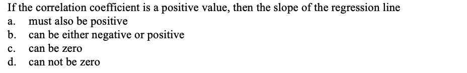

|
Please show your work before checking the answer and explanations or using StatsApps to generate full solutions.
Problem 1.
View Answer
Ans : C.
Explanation
Based on the definition of linear correlation coefficient.
Problem 2.
View Answer
Ans : B.
Explanation: See the the following table.
Problem 3.
View Answer
Ans : B.
Explanation: The definition of regression model.
Problem 4.
View Answer
Ans : A.
Explanation: The definition of regression model.
Problem 5.

View Answer
Ans : B.
Explanation: This relationship is true in simple linear regression.
Problem 6.
View Answer
Ans : D.
Explanation: The interpretation of the slope of regression model
Problem 7.
View Answer
Ans: C.
Explanation: The direction of correlation is reflected in the sign coefficient of correlation. However, coefficient of determination is the square of the correlation coefficient. It does not carry the information about the sign of the correlation.
Problem 8.
View Answer
Ans: B.
Explanation: The sqaure root of coefficient determination only gives the magnitude of the correlation coefficient, but not the direction.
Problem 9.

View Answer
Ans: A.
Explanation: A positive association implies that as one variable increases, the other variable also increases. This also means the slope in the corresponding regression model is also postive.
Problem 10.

View Answer
Ans: A.
Explanation: Since the all divisions have the same intercept. THe predictied difference is simply equal to the slope times the difference of the price, that is, 7.25 x 30000 = 217500.
Problem 11.
View Answer
Ans: A.
Explanation: Since slope is equal to zero inplying no linear relationship.
|